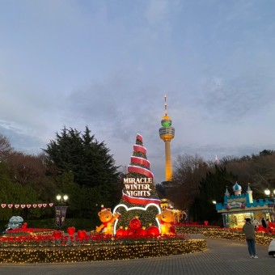
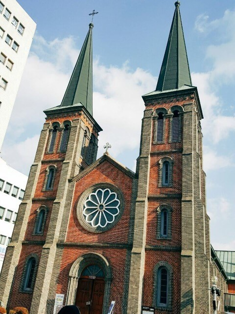
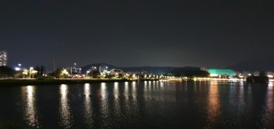
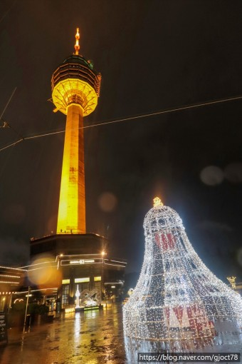

경상도의 중앙에 위치해 있는 광역자치단체. 대경권을 대표하는 대도시이자 대구권과 대경권의 최대도시다.
대구광역시 자체 인구로는 서울특별시, 부산광역시, 인천광역시에 이어 대한민국 4위, 도시권 전체 인구로는 수도권, 부산·울산권에 이어 대한민국 3위이다.
추천!

대구 이월드
'이월드'는 대구광역시 달서구 두류공원로 200에 위치한 테마파크.
1995년 3월 28일 개장하였으며 현재 이랜드그룹에서 운영하고 있다. 이월드로 명칭이 변경됐지만,
시민들은 여전히 옛 명칭인 우방타워랜드를 기억하고 있다. 때문에 택시 기사한테 '우방 갑시다'고 하면 십중팔구 이월드로 데려가준다.
대구 도시철도 2호선 두류역 15번 출구에서 약 10분 정도 거리에 정문이 위치해 있다. 후문은 내당역 2·3번 출구 하차 후 파도고개로 올라가야 나온다.
추천!

계산성당
'계산성당'은 대구시 중구 서성로 10(계산동2가)에 있는 성당. 계산오거리 매일신문사 옆에 있다. 정식명칭은 '천주교 대구대교구 계산 주교좌 대성당'이지만, 통상적으로 '계산성당'이라고 많이 불린다. 범어 대성당과 함께 천주교 대구대교구의 공동 주교좌 성당이다. 1898년에 본당을 세웠는데, 본당의 주보성인은 루르드의 성모. 사적 제290호로 지정되었다.
추천!

수성유원지
'대구 유원지'는 대구광역시 수성구 무학로 78 (두산동)에 위치한 호수공원. 1927년 4월 24일 규모 1,063,778㎡, 못둘레 2,020m, 저수량 70만톤으로 인공조성되었다.
사실 수성유원지보다는 수성못이라는 이름으로 더 많이 불린다. 오죽하면 대구 도시철도 3호선의 역 이름마저 수성못역일 정도다. 성당못과 함께 대구에서 잘 알려진 대형 연못이다
추천!

83타워
'83타워'는 대구광역시 달서구 두류공원로 200 (두류동)에 있는 탑이다. 완공 시기는 1992년이며 대한민국에서 두 번째로 높은 탑이다.
높이는 202m(탑신 153m + 철탑 49m)로써 대구에서 법적으로 가장 높은 건축물이다. 현재도 대구의 랜드마크 역할을 충실히 하고 있다.
아래에서 바라보는 체감 높이는 더 높은 편인데 아래의 애슐리, 아이스링크 등이 있는 3층짜리 저층부 위쪽에 탑이 있고,
위치가 이월드의 가장 높은 부분인 언덕 꼭대기 부분에 있기 때문이다.